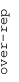
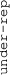

These results are also available as PDF and EPS documents.
Depending on your display resolution, scrolling or zooming may be necessary.
|  |
| 3 |
| 0 |
| -3 |
|  |
| MORF_RFC4 MORF_RFC4 | |||||||||||
| MORF_DNMT1 MORF_DNMT1 | |||||||||||
| MORF_CTBP1 MORF_CTBP1 | |||||||||||
| GNF2_RRM2 GNF2_RRM2 | |||||||||||
| GNF2_HMMR GNF2_HMMR | |||||||||||
| GNF2_CCNA2 GNF2_CCNA2 | |||||||||||
| GNF2_CDC2 GNF2_CDC2 | |||||||||||
| GNF2_CENPF GNF2_CENPF | |||||||||||
| GNF2_CDC20 GNF2_CDC20 | |||||||||||
| GNF2_BUB1 GNF2_BUB1 | |||||||||||
| MORF_PRKDC MORF_PRKDC | |||||||||||
| GNF2_DENR GNF2_DENR | |||||||||||
| GCM_NPM1 GCM_NPM1 | |||||||||||
| GNF2_MLF1 GNF2_MLF1 | |||||||||||
| MORF_LCAT MORF_LCAT | |||||||||||
| MORF_MSH2 MORF_MSH2 | |||||||||||
| MORF_MYL3 MORF_MYL3 | |||||||||||
| GNF2_CENPE GNF2_CENPE | |||||||||||
| MODULE_105 MODULE_105 | |||||||||||
| MORF_PPP2CA MORF_PPP2CA | |||||||||||
| MORF_HAT1 MORF_HAT1 | |||||||||||
| GNF2_DEK GNF2_DEK | |||||||||||
| GNF2_APEX1 GNF2_APEX1 | |||||||||||
| MODULE_183 MODULE_183 | |||||||||||
| MORF_SMC1L1 MORF_SMC1L1 | |||||||||||
| GNF2_NPM1 GNF2_NPM1 | |||||||||||
| GNF2_SMC2L1 GNF2_SMC2L1 | |||||||||||
| MORF_TERF1 MORF_TERF1 | |||||||||||
| GCM_CSNK2B GCM_CSNK2B | |||||||||||
| GNF2_ST13 GNF2_ST13 | |||||||||||
| GCM_APEX1 GCM_APEX1 | |||||||||||
| GCM_PSME1 GCM_PSME1 | |||||||||||
| GCM_ACTG1 GCM_ACTG1 | |||||||||||
| MORF_EIF4A2 MORF_EIF4A2 | |||||||||||
| MORF_G22P1 MORF_G22P1 | |||||||||||
| GCM_PFN1 GCM_PFN1 | |||||||||||
| MODULE_253 MODULE_253 | |||||||||||
| GCM_HBP1 GCM_HBP1 |